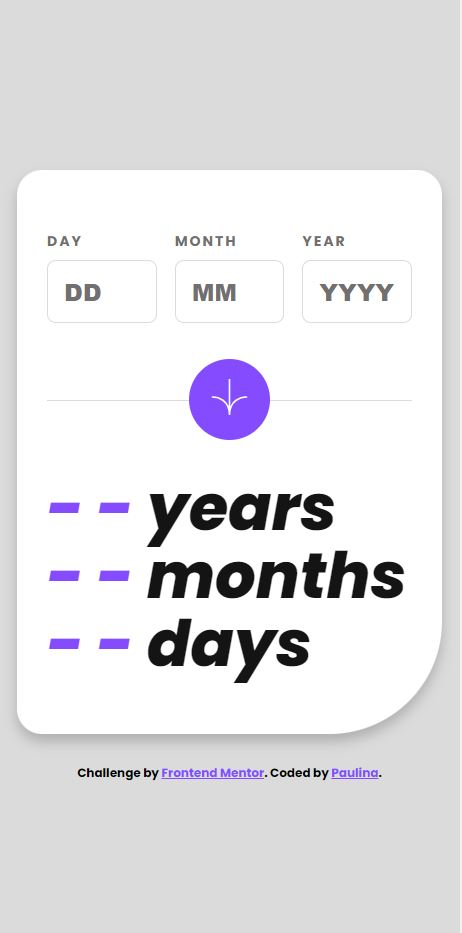
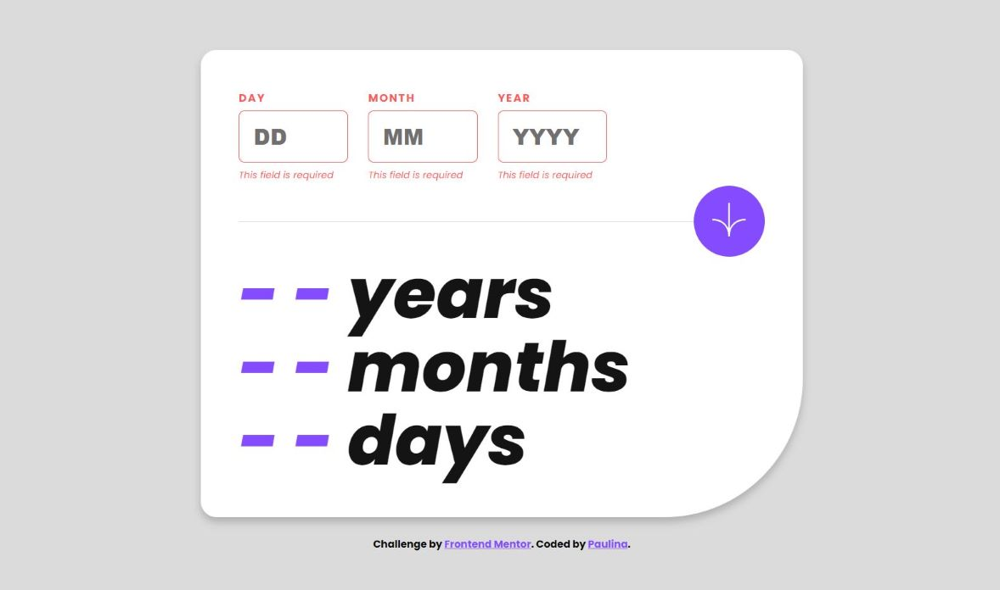
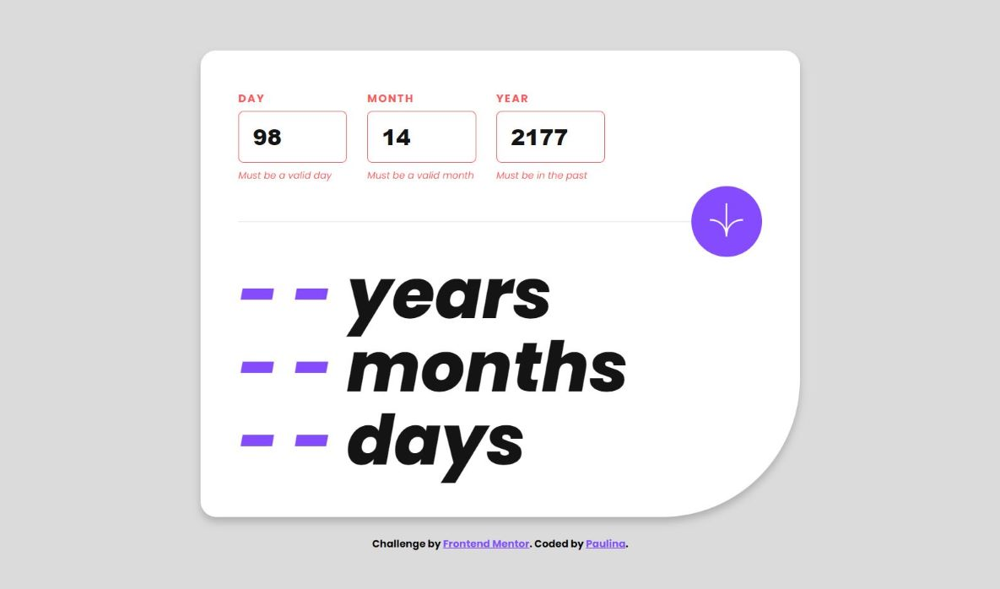
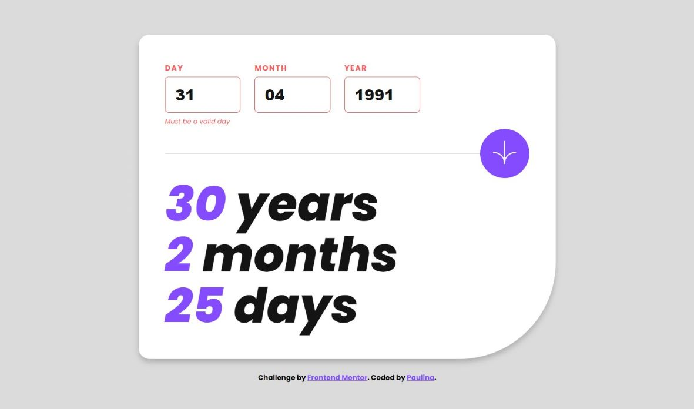
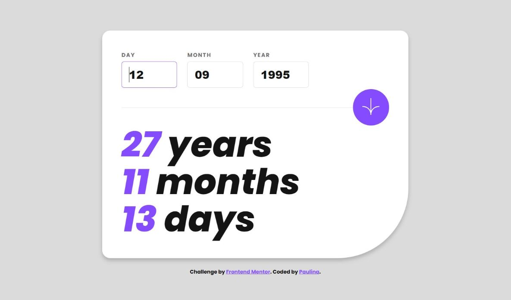

Project overview
The project is a simple web application developed as a part of the Frontend Mentor Challenges, where the design is provided.
It asks the user to input their date of birth in the day, month, and year format. The user interface includes a form with three separate input fields and a submit button.
After submission, the application calculates the user's age in years, months, and days and presents the results underneath the form.
Additionally, the application displays error messages if any of the input fields are blank or if the entered date is invalid.
Technologies used
- JavaScript
- HTML
- CSS
- Responsive design
- Mobile-first workflow
Key features
Users are prompted to input their date of birth using three separate fields for the day, month, and year.

If any field is left blank or contains an invalid value, an error message is displayed, and the age calculation is not performed.



Upon entering valid values and clicking the 'Submit' button, the application calculates the user's age in years, months, and days and displays the results underneath the form.

The application restricts non-digit characters from being entered and dynamically displays and removes error messages based on user input.
Additionally, the application employs responsive design principles, ensuring an optimal user experience across various screen sizes and devices.
Challenges and solutions
During the development process, I encountered several challenges, including
validating the user input, restricting non-digit characters in the input fields,
dynamically handling error messages, accurately calculating the user's age,
and animating numbers.
-
To ensure the input for day, month, and year is valid, I implemented various validation functions in JavaScript.
These functions check if the input fields are empty or if the entered date is valid, and display appropriate error messages if necessary.
This approach ensures the age calculation is not performed unless the input is valid.
-
To ensure only valid numerical inputs were entered by the user, I utilized JavaScript to listen for keydown events and prevent the entry of non-digit characters.
This approach ensures that only valid numerical inputs are accepted.
-
I designed the application to dynamically display and remove error messages based on user input.
It was essential to clear the error messages and associated input and label styles when the user started typing in an input field or when the submit button was clicked.
This enhancement to the user experience was managed using JavaScript.
-
Once the input validation was successfully passed, the application calculates the user's age in years, months, and days from the entered birthdate to the current date.
The results are then displayed in appropriate spans, ensuring accurate age calculation and presentation.
-
To make the application more engaging, I implemented a function in JavaScript to manage the animation of the numbers from 0 to their final value when displaying the calculated age.
This contributed to a more engaging user experience.
Learning outcomes
Through this project, I have deepened my understanding and sharpened various existing skills:
- JavaScript Input Validation and Calculation: Enhanced my skills in using JavaScript for input validation and performing calculations.
- Modular JavaScript: Developed a more advanced approach to building modular JavaScript scripts, creating functions with distinct purposes, making the script easier to maintain.
- Error Handling: Gained more in-depth experience in handling and displaying error messages in a web application.
- Responsive Design and Mobile-First Workflow: Refined my skills in creating web applications that are responsive across different screen sizes using media queries in CSS, with a focus on a mobile-first workflow.
- CSS Custom Properties: Gained a deeper understanding of CSS custom properties, enabling me to create more maintainable and scalable style sheets.
- Interactive Elements: Improved my ability to create interactive elements on a web page using a combination of HTML, CSS, and JavaScript.
Project source code and website URL: